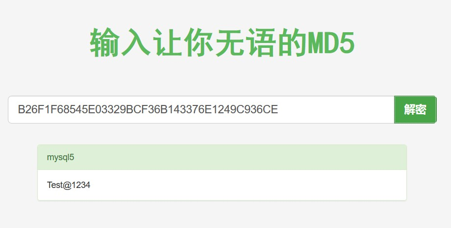

第三周：数据库系统表相关学习
数据库系统表相关学习
Date：第三周
Auther：胖花
Blog：http://peana.github.io/2019/09/04/third-week-work/
一、如何利用数据库读取文件
读取方法：1.load_file() 2. load data infile()
1.1 load_file()
- 成功执行的前提条件：
ps 命令中的1. 运行mysql进程的用户拥有文件读权限-u参数为查看进程用户
查看secure_file_priv值：2. 文件在该sql服务器上 3. 路径完整 4. 文件大小小于`max_allowed_packet` 5. secure_file_priv不为NULLshow global variables like "secure_file_priv"
windows：修改mysql.ini 文件，在[mysqld] 下添加条目: secure_file_priv =- 若为NULL，修改方法如下：
linux： 修改/etc/my.cnf的[mysqld]下面添加local-infile=0- 若`secure_file_priv`为具体某目录，一般为`/var/lib/mysql-files/`则此时只可对该目录下的文件进行读写操作 - 若为空，则可操作服务器中权限允许下的全部目录 - 使用方法：
1
2
3
4
5
6
7#1. 读取文件以字符串形式插入表中，然后去读表中数据
create table readFile(txt text);
insert into readFile (txt) values (load_file('/etc/passwd'));
select * from readFile;
#2. 直接使用select 命令查看
select load_file('/var/lib/mysql-files/test.txt')\G
#3. 使用SELECT...INTO OOUTFILE将load_file函数读取的信息写入文件
拓展用法：利用load_file函数和DNSlog获取sql盲注回显：利用DNSLOG获取看不到的信息（给盲注带上眼镜）
1.2 load data infile()
成功执行的前提条件：同上
使用方法：
load data infile '/var/lib/mysql-files/test.txt' into table readFile;select * from readFile;语法
1
2
3
4
5
6
7
8
9
10
11
12
13
14
15
16
17LOAD DATA [LOW_PRIORITY | CONCURRENT] [LOCAL] INFILE 'file_name'
[REPLACE | IGNORE]
INTO TABLE tbl_name
[PARTITION (partition_name,...)]
[CHARACTER SET charset_name]
[{FIELDS | COLUMNS}
[TERMINATED BY 'string']
[[OPTIONALLY] ENCLOSED BY 'char']
[ESCAPED BY 'char']
]
[LINES
[STARTING BY 'string']
[TERMINATED BY 'string']
]
[IGNORE number {LINES | ROWS}]
[(col_name_or_user_var,...)]
[SET col_name = expr,...]学习资料
https://www.cnblogs.com/c1e4r/articles/8618692.html
https://xz.aliyun.com/t/3973
https://www.smi1e.top/mysql-load-data-%E8%AF%BB%E5%8F%96%E5%AE%A2%E6%88%B7%E7%AB%AF%E4%BB%BB%E6%84%8F%E6%96%87%E4%BB%B6/
https://cloud.tencent.com/developer/article/1426503
https://www.anquanke.com/post/id/173039二、mysql系统表
本单元学习汇总自：MySQL常用系统表汇总、Mysql数据库主要系统表说明、MySQL常用系统表大全
MySQL5.7默认模式
库名 表数量 视图数量 information_schema 61 0 mysql 32 0 performance_schema 87 0 sys 1 100 Information_schema
由MySQL自带，它提供了访问数据库元数据的方式
元数据
元数据是关于数据的数据，如数据库名或表名，列的数据类型，或访问权限等。有些时候用于表述该信息的其他术语包括“数据词典”和“系统目录”。
在MySQL中，把 information_schema 看作是一个数据库，确切说是信息数据库。其中保存着关于MySQL服务器所维护的所有其他数据库的信息。如数据库名，数据库的表，表栏的数据类型与访问权限等。在INFORMATION_SCHEMA中，有数个只读表。它们实际上是视图，而不是基本表，因此，你将无法看到与之相关的任何文件
information_schema 数据库部分表说明
| 表名 | 注释 |
|---|---|
| SCHEMATA | 提供了当前mysql实例中所有数据库的信息。是show databases的结果取之此表 |
| TABLES | 提供了关于数据库中的表的信息（包括视图）。详细表述了某个表属于哪个schema、表类型、表引擎、创建时间等信息。是show tables from schemaname的结果取之此表 |
| COLUMNS | 提供了表中的列信息。详细表述了某张表的所有列以及每个列的信息。是show columns from schemaname.tablename的结果取之此表 |
| STATISTICS | 提供了关于表索引的信息。是show index from schemaname.tablename的结果取之此表 |
| USER_PRIVILEGES | 用户权限表:给出了关于全程权限的信息。该信息源自mysql.user授权表。是非标准表 |
| SCHEMA_PRIVILEGES | 方案权限表:给出了关于方案（数据库）权限的信息。该信息来自mysql.db授权表。是非标准表 |
| TABLE_PRIVILEGES | 表权限表:给出了关于表权限的信息。该信息源自mysql.tables_priv授权表。是非标准表 |
| COLUMN_PRIVILEGES | 列权限表:给出了关于列权限的信息。该信息源自mysql.columns_priv授权表。是非标准表 |
| CHARACTER_SETS | 字符集表:提供了mysql实例可用字符集的信息。是SHOW CHARACTER SET结果集取之此表 |
| COLLATIONS | 提供了关于各字符集的对照信息 |
| COLLATION_CHARACTER_SET_APPLICABILITY | 指明了可用于校对的字符集。这些列等效于SHOW COLLATION的前两个显示字段。 |
| TABLE_CONSTRAINTS | 描述了存在约束的表。以及表的约束类型 |
| KEY_COLUMN_USAGE | 描述了具有约束的键列 |
| ROUTINES | 提供了关于存储子程序（存储程序和函数）的信息。此时，ROUTINES表不包含自定义函数（UDF）。名为“mysql.proc name”的列指明了对应于INFORMATION_SCHEMA.ROUTINES表的mysql.proc表列 |
| VIEWS | 给出了关于数据库中的视图的信息。需要有show views权限，否则无法查看视图信息 |
| TRIGGERS | 提供了关于触发程序的信息。必须有super权限才能查看该表 |
performance_schema
PERFORMANCE_SCHEMA这个功能默认是关闭的。需要设置参数： performance_schema 才可以启动该功能，这个参数是静态参数，只能写在my.cnf 中 不能动态修改。
performance_schema数据库部分表说明
| 表名 | 注释 |
|---|---|
| setup_table | 设置表，配置监控选项 |
| current_events_table | 记录当前那些thread 正在发生什么事情 |
| history_table | 发生的各种事件的历史记录表 |
| summary_table | 对各种事件的统计表 |
| setup_consumers\setup_instruments | 描述各种事件, 设置哪些事件能够被收集 |
| setup_instruments | 描述这个数据库下的表名以及是否开启监控 |
| setup_timers | 描述监控选项已经采样频率的时间间隔 |
| threads | 监控服务器所有连接 |
| performance_timers | 设置一些监控信息, 指定mysql服务可用的监控周期，CYCLE表示按每秒检测2603393034次, 目前 performance-schema 只支持’wait’时间的监控，代码树上 wait/ 下的函数都可以监控到 |
mysql
在mysql数据库中，有mysql_install_db脚本初始化权限表，存储权限的表
mysql数据库部分表说明
| 表名 | 注释 |
|---|---|
| user | 用户列、权限列、安全列、资源控制列 |
| db | 用户列、权限列 |
| host | |
| table_priv | |
| columns_priv | |
| proc_priv |
sys
sys_config ： 这是在这个系统库上存在的唯一一个表
sys数据库表说明
1 | CREATE TABLE `sys_config` ( |
- variable ： 配置选项名称
- value ： 配置选项值
- set_time ： 该行配置修改的时间
- set_by ： 该行配置信息修改者，如果从被安装没有修改过，那么这个数据应该为NULL
| 配置选项名称 | 说明 |
|---|---|
| diagnostics.allow_i_s_tables | 默认为OFF ，如果开启表示允许diagnostics() 存储过程执行扫描information_schema.tables 表，如果表很多，那么可能会很耗性能 |
| diagnostics.include_raw | 默认为OFF,开启将会从metrics 视图输出未加工处理的数据 |
| statement_performance_analyzer.limit | 视图在没有加limit限制时，返回的最大行数 |
| statement_truncate_len | 通过format_statement()函数返回值的最大长度 |
| debug | 这个表非默认选项还有一个@sys.debug参数,可以手动加入 INSERT INTO sys_config (variable, value) VALUES(‘debug’, ‘ON’); UPDATE sys_config SET value = ‘OFF’ WHERE variable = ‘debug’; SET @sys.debug = NULL; |
| INSERT INTO sys_config (variable, value) VALUES(‘debug’, ‘ON’); | |
| UPDATE sys_config SET value = ‘OFF’ WHERE variable = ‘debug’; | |
| SET @sys.debug = NULL; |
sys_config的两个触发器
sys_config_insert_set_user触发器
如果加入新行通过insert语句，那么这个触发器会把set_by列设置为当前操作者
sys_config_update_set_user触发器
如果加入新行通过update语句，那么这个触发器会把set_by列设置为当前操作者
三、查询用户hash，使用hashcat爆破
1 | 查看sql用户密码 |
3.1 在线破解hash

3.2 使用hashcat
3.2.1 处理kali中的hashcat报错信息
使用kali自带的hashcat 一开始报错No device found/left，百度得知缺少驱动’OpenCL’
登录opencl官网下载安装包（现在需要先注册intel会员）
1 | tar -zxvf l_opencl_p_18.1.0.015.tgz |
3.2.2 利用hashcat破解上文中的mysql用户的hash值
1 | root@kali:~# hashcat -a 3 -m300 -1 Ttestafg1234@#$ --force B26F1F68545E03329BCF36B143376E1249C936CE ?1?1?1?1?1?1?1?1?1 |
3.2.3 hashcat 使用详解
hashcat --help
参数
1 | -a 指定要使用的破解模式，其值参考后面对参数。“-a 0”字典攻击，“-a 1” 组合攻击；“-a 3”掩码攻击。 |
攻击模式
1 | # | Mode |
Hash id 对照表
| num | Name | Category |
|---|---|---|
| 900 | MD4 | RawHash |
| 0 | MD5 | RawHash |
| 5100 | HalfMD5 | RawHash |
| 100 | SHA1 | RawHash |
| 1300 | SHA2-224 | RawHash |
| 1400 | SHA2-256 | RawHash |
| 10800 | SHA2-384 | RawHash |
| 1700 | SHA2-512 | RawHash |
| 17300 | SHA3-224 | RawHash |
| 17400 | SHA3-256 | RawHash |
| 17500 | SHA3-384 | RawHash |
| 17600 | SHA3-512 | RawHash |
| 10 | md5($pass.$salt) | RawHash,Saltedand/orIterated |
| 20 | md5($salt.$pass) | RawHash,Saltedand/orIterated |
| 30 | md5(utf16le($pass).$salt) | RawHash,Saltedand/orIterated |
| 40 | md5($salt.utf16le($pass)) | RawHash,Saltedand/orIterated |
| 3800 | md5($salt.$pass.$salt) | RawHash,Saltedand/orIterated |
| 3710 | md5($salt.md5($pass)) | RawHash,Saltedand/orIterated |
| 4010 | md5($salt.md5($salt.$pass)) | RawHash,Saltedand/orIterated |
| 4110 | md5($salt.md5($pass.$salt)) | RawHash,Saltedand/orIterated |
| 2600 | md5(md5($pass)) | RawHash,Saltedand/orIterated |
| 3910 | md5(md5($pass).md5($salt)) | RawHash,Saltedand/orIterated |
| 4300 | md5(strtoupper(md5($pass))) | RawHash,Saltedand/orIterated |
| 4400 | md5(sha1($pass)) | RawHash,Saltedand/orIterated |
| 110 | sha1($pass.$salt) | RawHash,Saltedand/orIterated |
| 120 | sha1($salt.$pass) | RawHash,Saltedand/orIterated |
| 130 | sha1(utf16le($pass).$salt) | RawHash,Saltedand/orIterated |
| 140 | sha1($salt.utf16le($pass)) | RawHash,Saltedand/orIterated |
| 4500 | sha1(sha1($pass)) | RawHash,Saltedand/orIterated |
| 4520 | sha1($salt.sha1($pass)) | RawHash,Saltedand/orIterated |
| 4700 | sha1(md5($pass)) | RawHash,Saltedand/orIterated |
| 4900 | sha1($salt.$pass.$salt) | RawHash,Saltedand/orIterated |
| 14400 | sha1(CX) | RawHash,Saltedand/orIterated |
| 1410 | sha256($pass.$salt) | RawHash,Saltedand/orIterated |
| 1420 | sha256($salt.$pass) | RawHash,Saltedand/orIterated |
| 1430 | sha256(utf16le($pass).$salt) | RawHash,Saltedand/orIterated |
| 1440 | sha256($salt.utf16le($pass)) | RawHash,Saltedand/orIterated |
| 1710 | sha512($pass.$salt) | RawHash,Saltedand/orIterated |
| 1720 | sha512($salt.$pass) | RawHash,Saltedand/orIterated |
| 1730 | sha512(utf16le($pass).$salt) | RawHash,Saltedand/orIterated |
| 1740 | sha512($salt.utf16le($pass)) | RawHash,Saltedand/orIterated |
| 14000 | DES(PT=$salt,key=$pass) | RawCipher,Known-Plaintextattack |
| 14100 | 3DES(PT=$salt,key=$pass) | RawCipher,Known-Plaintextattack |
| 14900 | Skip32(PT=$salt,key=$pass) | RawCipher,Known-Plaintextattack |
| 15400 | ChaCha20 | RawCipher,Known-Plaintextattack |
| 2500 | WPA-EAPOL-PBKDF2 | NetworkProtocols |
| 2501 | WPA-EAPOL-PMK | NetworkProtocols |
| 16800 | WPA-PMKID-PBKDF2 | NetworkProtocols |
| 16801 | WPA-PMKID-PMK | NetworkProtocols |
| 7300 | IPMI2RAKPHMAC-SHA1 | NetworkProtocols |
| 7500 | Kerberos5AS-REQPre-Authetype23 | NetworkProtocols |
| 8300 | DNSSEC(NSEC3) | NetworkProtocols |
| 10200 | CRAM-MD5 | NetworkProtocols |
| 11100 | PostgreSQLCRAM(MD5) | NetworkProtocols |
| 11200 | MySQLCRAM(SHA1) | NetworkProtocols |
| 16100 | TACACS+ | NetworkProtocols |
| 16500 | JWT(JSONWebToken) | NetworkProtocols |
| 121 | SMF(SimpleMachinesForum)>v1.1 | Forums,CMS,E-Commerce,Frameworks |
| 400 | phpBB3(MD5) | Forums,CMS,E-Commerce,Frameworks |
| 2811 | MyBB1.2+ | Forums,CMS,E-Commerce,Frameworks |
| 2811 | IPB2+(InvisionPowerBoard) | Forums,CMS,E-Commerce,Frameworks |
| 8400 | WBB3(WoltlabBurningBoard) | Forums,CMS,E-Commerce,Frameworks |
| 11 | Joomla<2.5.18 | Forums,CMS,E-Commerce,Frameworks |
| 400 | Joomla>=2.5.18(MD5) | Forums,CMS,E-Commerce,Frameworks |
| 400 | WordPress(MD5) | Forums,CMS,E-Commerce,Frameworks |
| 2612 | PHPS | Forums,CMS,E-Commerce,Frameworks |
| 7900 | Drupal7 | Forums,CMS,E-Commerce,Frameworks |
| 21 | osCommerce | Forums,CMS,E-Commerce,Frameworks |
| 21 | xt:Commerce | Forums,CMS,E-Commerce,Frameworks |
| 11000 | PrestaShop | Forums,CMS,E-Commerce,Frameworks |
| 124 | Django(SHA-1) | Forums,CMS,E-Commerce,Frameworks |
| 10000 | Django(PBKDF2-SHA256) | Forums,CMS,E-Commerce,Frameworks |
| 12 | PostgreSQL | DatabaseServer |
| 131 | MSSQL(2000) | DatabaseServer |
| 132 | MSSQL(2005) | DatabaseServer |
| 1731 | MSSQL(2012,2014) | DatabaseServer |
| 200 | MySQL323 | DatabaseServer |
| 300 | MySQL4.1/MySQL5 | DatabaseServer |
| 3100 | OracleH:Type(Oracle7+) | DatabaseServer |
| 112 | OracleS:Type(Oracle11+) | DatabaseServer |
| 12300 | OracleT:Type(Oracle12+) | DatabaseServer |
| 8000 | SybaseASE | DatabaseServer |
| 15000 | FileZillaServer>=0.9.55 | FTPServer |
| 11500 | CRC32 | Checksums |
| 3000 | LM | OperatingSystems |
| 1000 | NTLM | OperatingSystems |
| 500 | md5crypt,MD5(Unix),Cisco-IOS$1$(MD5) | OperatingSystems |
| 3200 | bcrypt$2*$,Blowfish(Unix) | OperatingSystems |
| 7400 | sha256crypt$5$,SHA256(Unix) | OperatingSystems |
| 1800 | sha512crypt$6$,SHA512(Unix) | OperatingSystems |
| 122 | macOSv10.4,MacOSv10.5,MacOSv10.6 | OperatingSystems |
| 1722 | macOSv10.7 | OperatingSystems |
| 7100 | macOSv10.8+(PBKDF2-SHA512) | OperatingSystems |
| 11600 | 7-Zip | Archives |
| 12500 | RAR3-hp | Archives |
| 13000 | RAR5 | Archives |
| 13600 | WinZip | Archives |
| 9700 | MSOffice<=2003$0/$1,MD5+RC4 | Documents |
| 9710 | MSOffice<=2003$0/$1,MD5+RC4,collider#1 | Documents |
| 9720 | MSOffice<=2003$0/$1,MD5+RC4,collider#2 | Documents |
| 9800 | MSOffice<=2003$3/$4,SHA1+RC4 | Documents |
| 9810 | MSOffice<=2003$3,SHA1+RC4,collider#1 | Documents |
| 9820 | MSOffice<=2003$3,SHA1+RC4,collider#2 | Documents |
| 9400 | MSOffice2007 | Documents |
| 9500 | MSOffice2010 | Documents |
| 9600 | MSOffice2013 | Documents |
| 10400 | PDF1.1-1.3(Acrobat2-4) | Documents |
| 10410 | PDF1.1-1.3(Acrobat2-4),collider#1 | Documents |
| 10420 | PDF1.1-1.3(Acrobat2-4),collider#2 | Documents |
| 10500 | PDF1.4-1.6(Acrobat5-8) | Documents |
| 10600 | PDF1.7Level3(Acrobat9) | Documents |
| 10700 | PDF1.7Level8(Acrobat10-11) | Documents |
| 99999 | Plaintext | Plaintext |
掩码设置
常见的掩码字符集
1 | l | abcdefghijklmnopqrstuvwxyz 纯小写字母 |
掩码使用：
1 | 八位数字密码：?d?d?d?d?d?d?d?d |
也可以自定义字符串，hashcat支持用户最多定义4组字符集
1 | --custom-charset1 [chars]等价于 -1 |